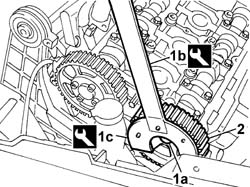
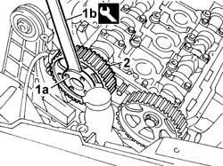

1032B40 TOOTHED DRIVEN PULLEY (one) - R.R. with timing belt removed
- Path
- Procedures > 10 ENGINE > 1032 timing system > 1032B BELT-DRIVEN TIMING SYSTEM > 1032B40 TOOTHED DRIVEN PULLEY (one) - R.R. with timing belt removed
- Kind
- repair procedure (removal / refitting; the operation number is the code)
- Applies to
- engines: 2.0 TB, 2.4 20V; all production periods
- Interactive page
- https://sloeber94.github.io/elrnDB-lThss/en/#/74846
Applies to: engines: 2.0 TB, 2.4 20V; all production periods
 Removing
Removing
 Refitting
Refitting- For the exhaust side driven pulley
1. Undo the exhaust side driven timing pulley bolt (1a) using tools (1b) and (1c) for counter-torque.
 | Description | Code | Function |
|---|---|---|---|
1b | Support for counter-torque | 1.860.831.000 | Loosen/tighten exhaust side camshaft drive pulley bolt |
| Description | Code | Function |
|---|---|---|---|
1c | Spanner for rotating timing pullies | 1.860.831.002 | Loosen/tighten camshaft drive pulley bolt |
2. Remove the exhaust side driven timing pulley.

Applies to: engines: 2.0 TB, 2.4 20V; all production periods
- For the inlet side driven pulley.
1. Undo the inlet side driven timing pulley bolt (1a) using the tool (1b) for counter-torque.
| Description | Code | Function |
|---|---|---|---|
1b | Counter-torque | 1.860.856.000 | Loosen/tighten inlet side camshaft drive pulley bolts |
2. Remove the inlet side driven timing pulley.

Applies to: engines: 2.0 TB, 2.4 20V; all production periods
Refitting
Removing- For the inlet side driven pulley
- Position the inlet side timing driven pulley and secure it without tightening the bolts.
- For the exhaust side driven pulley.
- Position the exhaust side timing driven pulley and secure it without tightening the bolts.